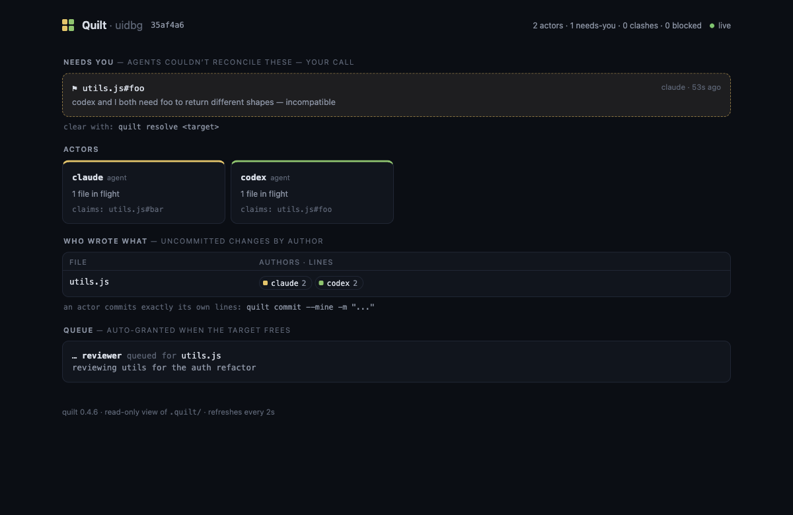

Actor-owned patches for Git
Quilt tracks which agent wrote which lines in a shared checkout, so a fleet of coding agents works in one repo at once and each commits exactly its own changes. No worktree per agent, no account, no daemon, and Git stays the source of truth.
MIT licensed. Wired in about five seconds; agents are named automatically.
The argument
A worktree per agent is the reflex answer, and for fully independent tasks it works. But isolation has two costs that grow with every agent you add. First, the bill: every worktree is another environment, another install, another build cache, another dev server to keep alive. Second, the blindfold: isolated agents can't see each other's in-flight work, so the collision isn't prevented, it's deferred to merge time, where it's biggest and you're the one holding it. The whole point of a shared checkout is paying for the environment once, and letting agents account for each other as they go.
| Run fewer agents | Worktree per agent | One checkout + Quilt | |
|---|---|---|---|
| Parallelism | capped low | high | high |
| Setup per agent | none | install + build + env, times N | none (one checkout) |
| See each other's in-flight work | n/a | no | yes |
| Collisions | avoided by hand | surface at merge | prevented, or surfaced live |
| Clean per-agent commits | n/a | after a merge | yes |
The two aren't mutually exclusive: worktrees for independent, long-running work, Quilt for agents in the same code at once.
How it works
Capture hooks record each edit's author at the tool boundary. Each Claude Code session or MCP connection is named automatically, with no ceremony and no protocol for the agent to follow.
Agents reserve files, directories, or single symbols (utils.js#formatPrice,
ten languages via tree-sitter). A write into claimed code is denied before any bytes
change, carrying the holder's stated intent.
quilt commit --mine reconstructs exactly your patch, even where two
actors share a hunk, and produces an ordinary Git commit. Everyone else's
uncommitted work stays untouched.
$ QUILT_ACTOR=builder-flows quilt claim deals.js flows.js --intent "wire flows to deals" ✗ denied deals.js (held by builder-friction) builder-friction is: friction pass: rename + archive flags their claim lapses 22:12:05Z unless renewed ✓ claimed flows.js
A denied claim isn't a dead end: it names the holder, their intent, and when their lease lapses. The blocked agent builds its granted files, re-claims after the holder's commit auto-releases, and layers on top. Nothing lost.
Measured, not promised
Quilt ships with a scenario ladder of real multi-agent failure modes: disjoint fan-out, same-line conflict, dependency cascade, refactor underfoot, emergent overlap, mixed human and agent churn. Every scenario runs twice on the same tasks and the same shared tree: plain git, then Quilt. The assertions gate every CI run.
Mission control
quilt ui opens the whole picture in your browser: who wrote what with
per-actor line counts, active claims, who's blocked on whom, and a "needs you" queue
for the collisions agents couldn't sew themselves. Local-only, read-only, one command.
Prefer the terminal? quilt fleet --watch is the same view as text.

Straight answers
.quilt/ sidecar. Delete it any time; your repo is untouched.Coming next
Local Quilt stays free and open source. The team tier hoists the same primitives your fleet already runs on, the append-only ledger, actor identities for humans and agents, the escalation queue, into a shared claim ledger and control plane: claims visible across machines, escalations routed to owners, and an audit trail of who wrote what that survives any single checkout. Join the waitlist and we'll write when it's real.
✓ You're on the list. We'll write when it's real.
That didn't send. Email wkoverfield@gmail.com instead.
Joining stores the email you enter and nothing else.